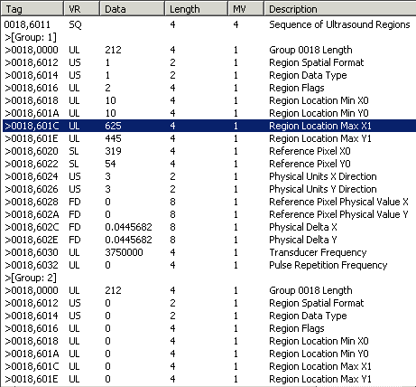

The IDLffDicomEx::GetValueLength function method returns the length of all values or of a specified value (in bytes) in a standard DICOM attribute. This method allows you to return the length of values contained in public attributes. See IDLffDicomEx::GetPrivateValueLength for information on returning the length of values within a private attribute.
Note: GetValueLength will fail if you attempt to return a value for an attribute that does not exist or an attribute that has been removed. If you are not sure if an attribute exists use IDLffDicomEx::QueryValue before calling GetValueLength.
Result = Obj ->[ IDLffDicomEx ::]GetValueLength( DicomTag [, SEQID = integer ] [, VALUEINDEX = integer ])
Returns a long integer indicating the length of one of the following:
A string that identifies the group and element of a DICOM attribute in the form 'XXXX,XXXX'. The DicomTag argument must reference a public tag. See DICOM Attributes for a list of tags.
Set this keyword only if retrieving the value of an attribute that exists within a sequence. Use this keyword to specify sequence identifier as follows:
Set this keyword to an integer indicating the one-based index number of the value for which to return the length. If not set, this method returns the length of a single value for a single-valued attribute, or the length of all values for a multi-valued attribute.
Note: An error will be issued if you specify a value larger than the number of values in the attribute.
The following code accesses the value length of all values in the multi-valued Image Type attribute (0008,0008) as well as the length of the last value in this attribute by using the VALUEINDEX keyword.
PRO read_vallength_doc
; Select a DICOM file to examine.
sFile = DIALOG_PICKFILE( $
PATH=FILEPATH('',SUBDIRECTORY=['examples','data']), $
TITLE='Select DICOM Patient File', FILTER='*.dcm')
; Open the selected file in read-only mode.
oImg = OBJ_NEW('IDLffDicomEx', sfile)
; Print the length and value of the Image Type attribute.
value = oImg->GetValue('0008,0008', count=vCount)
vLength = oImg->GetValueLength('0008,0008')
vLastLength = oImg->GetValueLength('0008,0008', VALUEINDEX=vCount)
PRINT, 'Length of all values = ', vLength, ' for values = ', value
PRINT, 'Length of last value = ', vLastLength
END
The following code uses the GetValueLength method to return the number of repeating groups in a sequence. As this method will fail if the specified DICOM attribute does not exist in a file, the example is hard-coded to use the us_test.dcm file in the examples/data directory.
PRO read_attributes_doc
; Select a DICOM file to examine.
sFile = FILEPATH('us_test.dcm', $
SUBDIRECTORY=['examples','data'])
; Open the selected file in read-only mode.
oImg = OBJ_NEW('IDLffDicomEx', sfile)
; Return information from Sequence of Ultrasound Reigons.
; When a sequence has multiple groups, the sequence identifier
; returned by GetValue is a zero-based vector of values.
vSeqId = oImg->GetValue('0018,6011', COUNT=vCount)
; Using GetValueLength in conjunction with a sequence returns the
; number of repeating groups in the sequence.
vSeqLength = oImg->GetValueLength('0018,6011')
FOR i = 1, vSeqLength DO BEGIN
; Return the length and value of each Region Location Max X1
; (0018,601c) item for all groups within the sequence.
vLength = oImg->GetValueLength('0018,601c', SEQID=vSeqId[i-1])
result = oImg->GetValue('0018,601c', SEQID=vSeqId[i-1])
Print, 'Sequence group ', i, + ' item length is ', vLength, + $
' and value is ', result
ENDFOR
END
The following is printed to the Output Log window:
Sequence group 1 item length is 4 and value is 625
Sequence group 2 item length is 4 and value is 0
Sequence group 3 item length is 4 and value is 0
Sequence group 4 item length is 4 and value is 0
The previous values are consistent with those shown in the following figure. The sequence for which the array of sequence identifiers was returned is shown on the first line. Notice that it is multi-valued, containing four repeating groups (only a portion of which are visible). The highlighted item indicates the first Region Location Max X1 attribute. The second corresponding attribute is shown near the bottom of the figure.

Note: For information on writing the values of DICOM attributes to the output window or a file, see the IDLffDicomEx::EnumerateTags method.
|
6.1 |
Introduced |